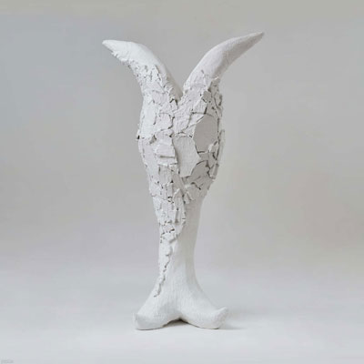

너드커넥션
연세대학교 밴드 동아리 메두사에서부터 시작된 4인조 밴드.
1990~2000년대 초반 영국의 밴드 음악에서 영감을 받아
브리티쉬 팝과 얼터너티브 록 기반의 음악을 다룬다.
정규 2집 [그래도 우리는]은 언뜻 똑같아 보이는 일상을
멀리서 조금 더 자세히 들여다보는 앨범이다.
반복되는 일상에서 스스로를 잃어버린 인물의 Losing Myself,
힘겹고 불안한 삶에서도 희망을 노래하는 사랑을 닮은 이유로 등
감성을 자극하는 가사와 멜로디에서 깊은 위로를 받았다.